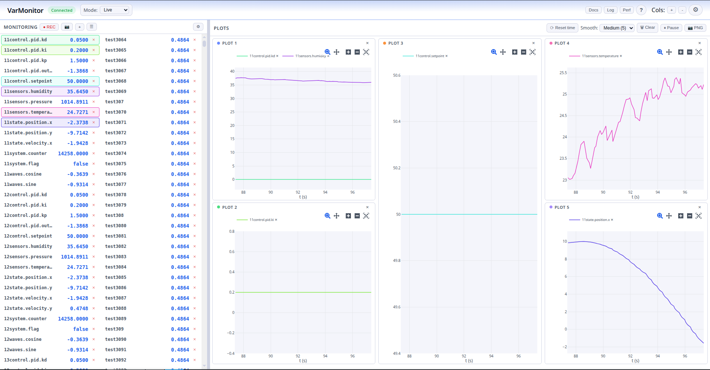
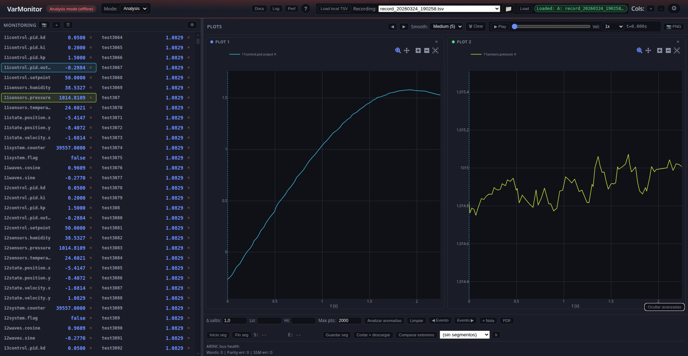
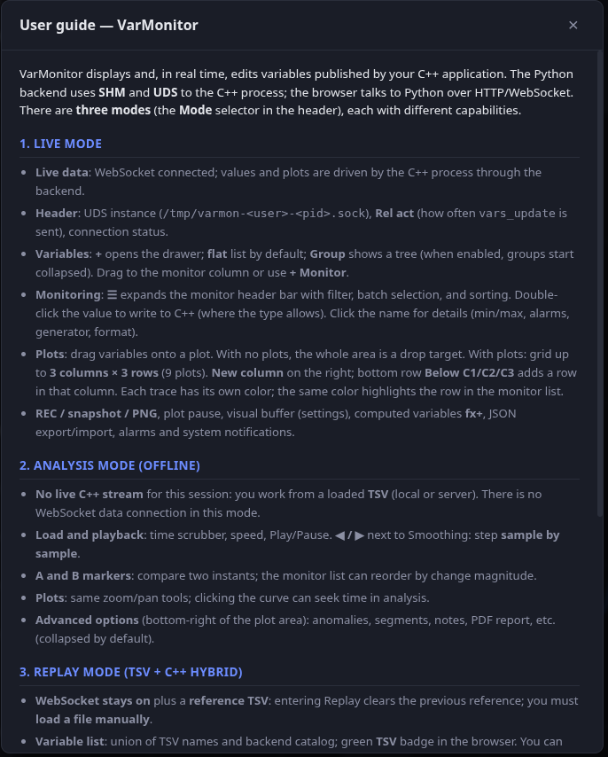
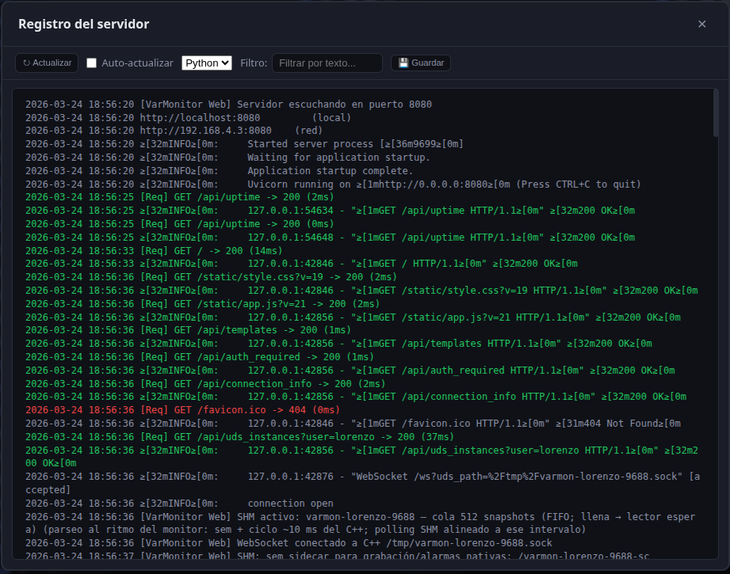

Frontend
The frontend is a SPA under web_monitor/static/: index.html, stylesheets, and a modular ES client (js/entry.mjs → app-legacy.mjs, constants / i18n modules; optional IIFE bundle via esbuild). It uses Plotly.js for charts.
UI overview
Header with connection state, mode selector (Live / Analysis / Replay / ARINC registry), Rel act, theme and language; three columns (browser, monitor, plots) except in registry mode.


Client code structure
- ES modules:
entry.mjsloads the main logic; constants and i18n live underjs/modules/. Without a bundler, the browser loads.mjsfiles withtype="module". - Global state (main module scope):
monitoredNames,monitoredOrder,varGraphAssignment,arrayElemAssignment,graphList,historyCache,arrayElemHistory,plotInstances,alarms,computedVars,appMode,offlineDataset, etc. - Initialization: After load,
loadConfig(),pruneArincDerivedFromMonitored(),applyTheme(),applyLanguage(), listeners, plot areaResizeObserver, andrebuildPlotArea().
Three columns
- Column 1 (variable browser): Known variables (
knownVarNames), filter, optional grouping, checkboxes to add to "monitor" or select for drag. Drag & drop to column 2 or onto a chart. - Column 2 (monitor): Live variables with current value. Order from
monitoredOrder. Each row can assign the variable to a chart (varGraphAssignment[name] = gid). Monitored variables are sent to the backend via WebSocket (monitored). - Column 3 (charts): Plotly area. Slots per chart (
graphList: IDsg1,g2, ...). Each slot has#plotContainer_<gid>. Variables assigned to a chart come fromvarGraphAssignmentandarrayElemAssignment; getVarsForGraph(gid) returns names for thatgid.
Live data flow (WebSocket)
- On connect, the frontend sends the monitored list (
monitored) and the backend sendsvars_updatesnapshots. - The message handler updates
historyCacheandarrayElemHistory, then calls schedulePlotRender(). - schedulePlotRender(): If not paused and throttle allows (adaptive load), queues requestAnimationFrame → renderPlots().
Charts: key functions
- rebuildPlotArea(): Purge Plotly from existing containers, clear the area (except
#plotEmpty), for eachgidingraphListcreate a slot (header +#plotContainer_<gid>). Insert slots beforeplotEmpty. If there is at least one chart, hideplotEmptyso the grid fills height; if none, showplotEmpty(drop zone for new chart). - renderPlots(): For each
gid, get variables with getVarsForGraph(gid), build traces fromhistoryCache/arrayElemHistory(time window fromtimeWindowSelect), optional smoothing, thenPlotly.newPlotorPlotly.react. UpdatesplotEmptyvisibility and render stats. Second paint after F5: the first timerenderPlots()finishes withgraphList.length > 0, schedule one extra schedulePlotRender() at 500 ms (__plotSecondPaintScheduled) so curves redraw once WebSocket data has arrived. - getVarsForGraph(gid): Names assigned to
gid: entries inmonitoredNameswithvarGraphAssignment[name] === gid, plus ARINC-derived names pointing togid, plusarrayElemAssignmententries forgid.
Persistence (localStorage)
- saveConfig() / loadConfig(): Store and load under
varmon_configmonitored list,varGraphAssignment,graphList, time window, theme, language, mode (live/offline/replay/arinc_registry), recording paths,arincLabelRegistry,arincImportColumnMap, etc. On load,rebuildPlotArea()runs at end of init so chart slots exist immediately.
Importable ARINC registry
- Module
js/modules/arinc-registry.mjs: CSV/TSV/tabular XML parsing, merge, JSON I/O, andgetArincLabelDef(user registry + built-in demos). - «ARINC registry» UI mode: filterable table, import with column-mapping modal (per label row vs DIS rows with bit index/name), JSON export (optional built-ins), minimal CSV template, clear imported data.
- Canonical JSON:
{ "version": 1, "labels": { "203": { "name", "encoding", "bits", …, "discreteBits": [{ "index", "name" }] } } }(keys are 3-digit octal label ids). - XML: root direct children with homogeneous sub-elements become rows (tag names = headers). Otherwise export to CSV or use the template.
- DIS in variable detail: for
discreteencoding anddiscreteBits, the stats panel lists each named bit as 0/1.
Modes: live, analysis and hybrid replay
- Live: Data via WebSocket from the backend (SHM/UDS). UDS instance selector, Rel act (
update_ratio), recording, alarms. - Offline (analysis): Load recordings as Parquet (canonical) or legacy TSV (server, local file, or remote file browser). Large Parquet: row-based safe mode (
row_start/row_countvia API); a local.parquetis uploaded toPOST /api/recordings/parquet_preview_uploadfor JSON in the same shape as TSV parsing. Time windows still use/api/recordings/{filename}/windoworwindow_batch(backend reads Parquet or TSV by extension).offlineDataset,offlineRecordingName, segments, scrubber and playback controls are specific to this mode. - Replay (hybrid): WebSocket stays on for
vars_names/vars_updatefrom SHM while using a TSV as a time reference. Variable list is the union of backend + TSV. Only TSV variables marked impose continuously write to SHM from TSV values (withΔt/Δvoffsets); non-imposed TSV variables behave like normal SHM variables.


Advanced options (plot area)
Collapsible panel (bottom-right) for anomalies, segments, notes, PDF report, etc.

In-app help and log viewer
- Help (
H/?): modal with per-mode guidance and links to MkDocs when built.

- Log: panel with Python backend log (and optional C++ tail via
log_file_cpp); see Installation — Log viewer.

Chart resize
- A ResizeObserver watches
#plotArea. On size change, Plotly.relayout each chart container to currentgetBoundingClientRect().
Perf panel
- Header Perf button: full-screen overlay that polls
GET /api/perfwhile open. - Three sections: Python, C++ (
write_shm_snapshot), and sidecar (only whensidecar_cpprecording is active and the binary writes the--perf-fileJSON). Tables show last time, EMA, and sample count; stacked bar charts per layer.
 - The first request renews the measurement lease on the server (same as
- The first request renews the measurement lease on the server (same as GET /api/advanced_stats?perf=1 from the advanced stats strip). If the lease expires, the panel shows a hint until it is opened again or advanced stats refreshes the lease.
- Sidecar phase details and optimizations: Performance.
Shortcuts and more
- Keyboard: Escape (close overlays), Space (pause/resume charts), Ctrl+Z / Ctrl+Y (undo/redo layout), R (record), S (screenshot), etc.
- Advanced admin: overlay with config paths, recordings, server state; "Save changes" applies
web_port,web_port_scan_max, andrecordings_write_tsv(/api/admin/runtime_config). The "Also write TSV" checkbox controls whether a legacy.tsvis written in addition to canonical Parquet. Port fields, range, or that checkbox highlight green until saved.